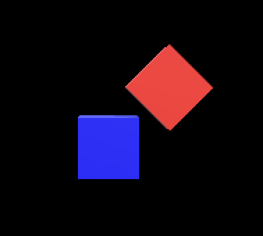

Unity Technologies が運営しているアセットストアから無料・有料を問わず様々なアセットをダウンロードして利用することが出来ます。
ここでは練習としてアセットストアから Unity Technologies が用意している Standard Assets というアセットをダウンロードして使ってみましょう。
※ なお Standard Assets はもうメンテナンスしていないらしいので、近々使えなくなる可能性があります。
まず以下の手順でマイアセット(My Assets)に Standard Assets を登録し、PC にダウンロードします。
(サインインしてなければ) Unity ハブを開いて Unity ID にサインインする
Webブラウザでアセットストアにアクセスする
(サインインしてなければ) Webブラウザ上でも Unity ID にサインインする
「Standard Assets」で検索して「Standard Assets (for Unity 2018.4)」のページを開く
「Add to My Assets」または「マイアセットに追加」ボタンを押す
使用許諾が表示されたら Accept ボタンを押す
Unity で開くかどうか聞いてくるので、「Open in Unity」または「Unity で開く」ボタンを押す
Web ブラウザから Unity エディタにアプリが切り替わり、パッケージマネージャ(Package Manager)ダイアログ内にマイアセットが開いて Standard Assets が表示される
※ もしパッケージマネージャが開かない場合は Unity エディタの Window メニュー → Package Manager を選択し、「Package Manager」と書いてあるタブの下の「Packages:〜」と書いてある欄を「Pakages: My Assets」に切り替えるとマイアセットが表示されます(図1)
図1. 「Pakages: My Assets」に切り替えるとマイアセットが表示される
右下にある「Download」ボタンを押すと PC に Standard Assets がダウンロードされる
では次に Standard Assets をプロジェクトに取り入れて 3D の飛行機を画面内に表示してみます。
パッケージマネージャの右下にある Import ボタンを押す
どのファイルを取り入れるか聞いてくるのでそのまま「Import」ボタンを押す。すると全てのファイルをプロジェクトに取り入れる。
するとアセットフォルダに「Standard Assets」というフォルダが出来る
Standard Assets → Vehicles → Aircraft → Prefabs を開く(図 2)
図2. Standard Assets の中身
Prefabs フォルダに含まれているファイルを適当に選んで(例えば AircraftJet.prefab)ヒエラルキーにドラッグ＆ドロップする
するとゲームビューに 3D モデルの飛行機が表示されるので、Position や Rotation を適当に調整する(図3)
この他にも色々なアセットがありますので、色々試してみて下さい。